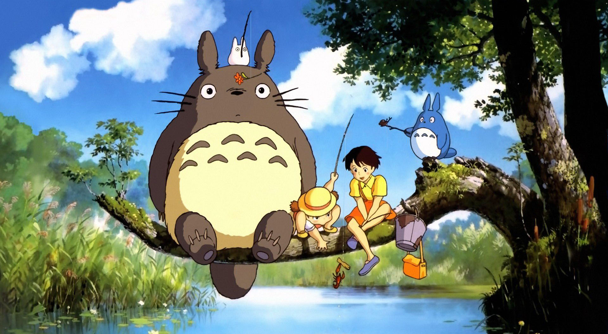
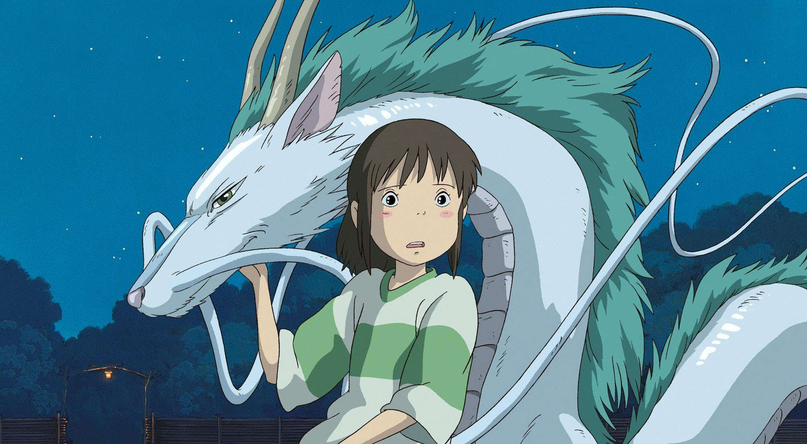
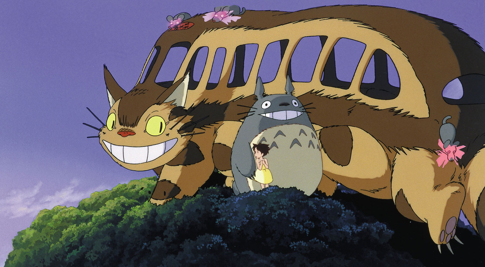
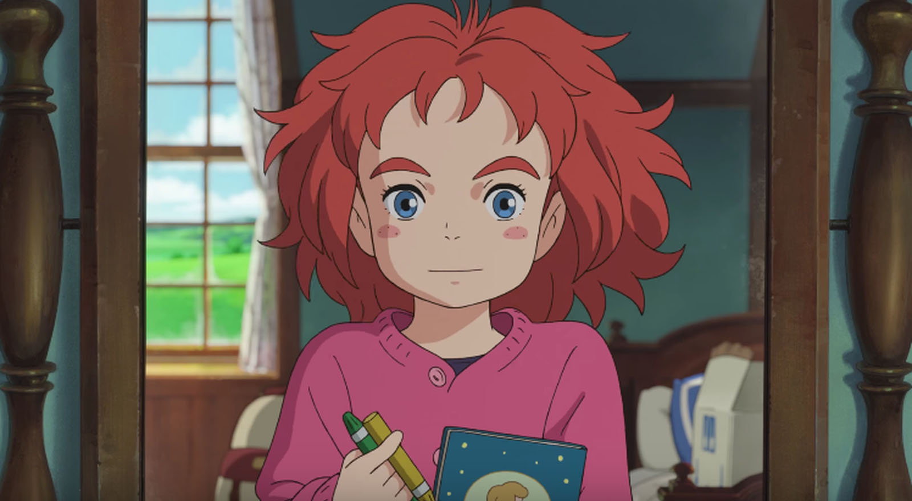
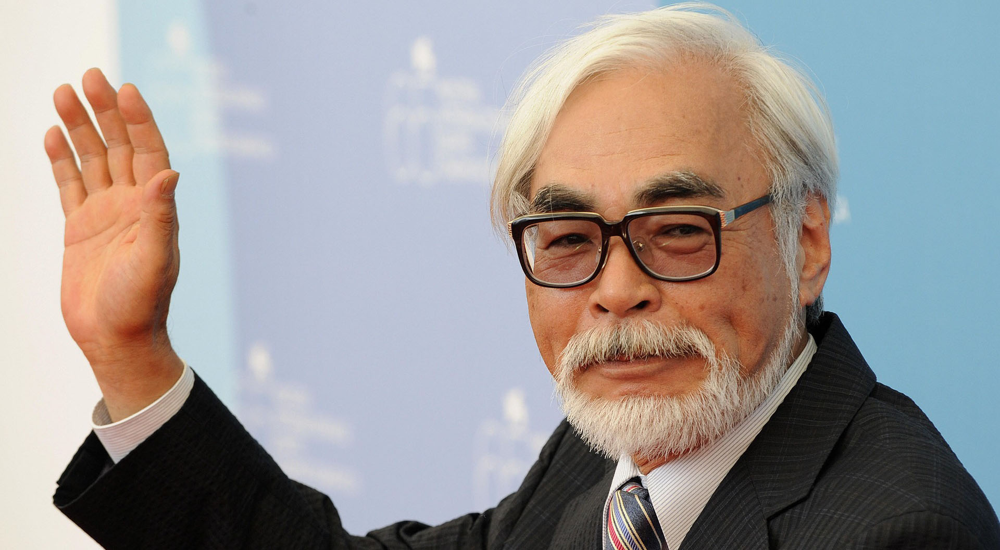

Highest Grossing Ghibli Movies
Studio Ghibli is a Japanese animation film studio based in Koganei, Tokyo, Japan. The studio is best known for its anime feature films. Studio Ghibli began in June 1985 after the success of Nausicaä of the Valley of the Wind with funding by Tokuma Shoten. The studio has produced nineteen feature films, several short films, television commercials and a television film. Eight of Studio Ghibli’s films are among the 15 highest-grossing anime films made in Japan, with Spirited Away being the highest, grossing over $274 million worldwide.

Our new exhibition: All Aboard!
The Cat Bus to the Ghibli Forest
Thanks to your support, the Ghibli Museum, Mitaka, is celebrating its 15th year. Some visitors who were school children when we first opened are now parents, and we are pretty sure we see some of those first visitors bringing their kids to the Museum.Every year we have presented a new annual exhibition - that makes 14 in total!

Former Ghibli director unveils new animated
film, Mary and the Witch's Flower
Former Studio Ghibli director Hiromasa Yonebayashi has released the trailer for his new project, Mary and the Witch's Flower.The director, best known for his work on Arrietty and When Marnie Was There, left Ghibli around the end of 2014. For his new film, he’s teaming up with another former Studio Ghibli producer, Yoshiaki Nishimura at Nishimura’s new production company, Studio Ponoc.

Hayao miyazaki is coming out of
retirement to make a final film
Back in 2013, legendary Japanese animator and director Hayao Miyazaki announced he would be retiring; making no more feature-length films in order to concentrate on smaller projects. Well, it turns out you can’t keep a good Oscar-winning artist down, and Miyazaki says he’s now coming out of retirement to make one last movie.